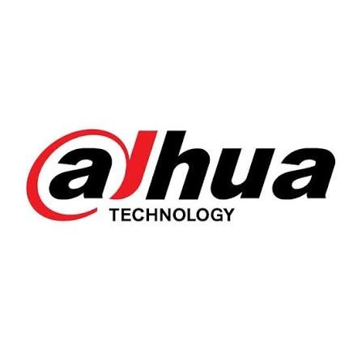
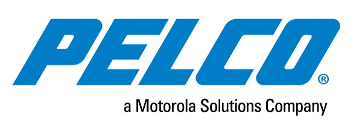

What We Deliver
Edge-AI surveillance systems engineered to detect, classify and alert proactively across critical enterprise infrastructure.
Edge Analytics Engine
Localised, low-latency processing on edge-AI cameras (4K UHD, thermal and PTZ) that analyzes pixels on-device without network bottlenecks.
Behavioural and Acoustic Detection
Automated alerts for tailgating, perimeter intrusion, glass breakage and aggression voices, filtering environmental noise automatically.
Vision-Language Search
Instant contextual video retrieval and cross-camera, multi-point path reconstruction allowing operators to search events in plain language.

Encrypted Architecture
Hybrid cloud and on-premise VMS running over high-density PoE switches with end-to-end cryptographic streams and storage redundancy.
Automated ANPR & Ingress Telemetry
High-accuracy vehicle license plate recognition, automated boom barrier triggers, blacklisted vehicle alerts, and integrated parking bay telemetry.
Thermal Heatmapping & PPE Safety
Continuous radiometric temperature scanning for early overheat hazards, alongside on-edge neural audits verifying mandatory safety gear compliance.
How It Connects to the Converged Nervous System
Access Control Cross-Trigger
Whenever an unauthorized badge swipe occurs, the nearest PTZ camera captures an instant forensic snapshot.
Fire Life Safety Verification
When an addressable smoke sensor trips, thermal cameras slew automatically to verify hot spots and smoke density.
Central PSIM Ingestion
Streams feed directly into the central orchestration engine with automated geospatial map positioning.
Operational Outcomes
Works With
 Bosch
Bosch Honeywell
Honeywell
Dahua
PelcoFrequently Asked Questions: Smart CCTV & AI
Concise, website-ready guidance on visual intelligence, edge analytics, and system integration.
Smart CCTV and AI surveillance combines video monitoring with artificial intelligence to help detect suspicious activities, identify security anomalies, and improve real-time situational awareness.
TrustNexus solutions can include AI-powered video analytics, 4K UHD cameras, thermal imaging, PTZ cameras, behavioral detection, acoustic anomaly detection, and intelligent video search, depending on the project requirements.
Yes. Configured AI analytics can help identify activities such as perimeter breaches and tailgating, as well as certain acoustic events such as glass breaking. Detection capabilities depend on the installed equipment and system configuration.
Edge AI processes video analytics directly on compatible cameras or edge devices. This can reduce processing latency and network bandwidth usage while enabling faster detection of selected events.
Yes. TrustNexus's converged ELV architecture is designed to integrate compatible surveillance, access control, and life-safety systems for coordinated monitoring and incident response.
TrustNexus describes vision-language search capabilities that allow operators to search footage using natural-language descriptions and reconstruct activity across multiple cameras, where supported by the deployed system.
The brochure describes both on-premises and cloud-based video management architectures. The appropriate option depends on the organization's security policies, infrastructure, storage requirements, and deployment needs.
Smart CCTV solutions can support industrial facilities, corporate offices, warehouses, campuses, healthcare facilities, and other environments that require improved security monitoring.
Protecting What Matters Most
We don't just install systems. We engineer secure, intelligent and resilient environments that keep businesses connected, protected and prepared for the future.